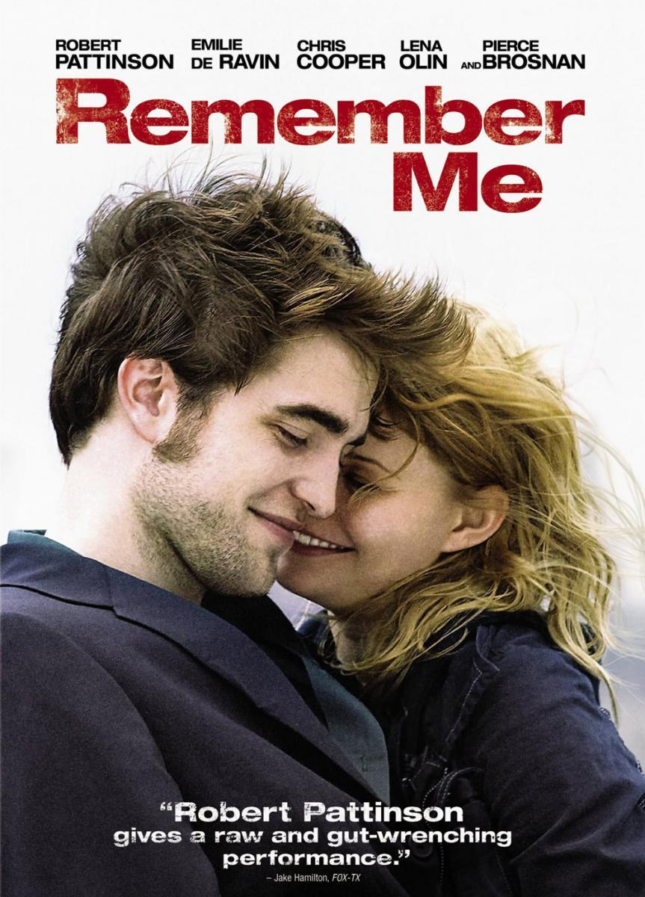

Diario de una Pasión

Promedio de votos: 7,56
Review: Una película con una historia de amor bastante popular. Los personajes principales en su etapa más adulta, ya como ancianos, llegaron a conmoverme aun más, pero igual todos hacen un buen papel. No tiene nada de malo ser "meloso" pero hay que equilibrar las cosas si se quiere ser más realista e impactar más).
After
Promedio de votos: 8,56
Review: Una película con una historia de amor bastante popular. Los personajes principales en su etapa más adulta, ya como ancianos.Sin embargo, el "romance juvenil" es demasiado acaramelado, cursi e incluso bobo para mi gusto (es decir, no tiene nada de malo ser "meloso" pero hay que equilibrar las cosas si se quiere ser más realista e impactar más)
A través de mi Ventana

Promedio de votos: 8,56
Review: Es mi pelicula insignia! Dentro de este género,) que es mi preferido junto con las comedias románticas), ha sido la MEJOR pelicula de. Mi vida, me la veo cuantas veces pueda y nunca me Canso, siempre encuentro algo nuevo, siempre llega a. Mi corazón algo nuevo,cada vez que la observo.
Recuerdame

Promedio de votos: 8,56
Review: Es mi pelicula insignia! Dentro de este género,) que es mi preferido junto con las comedias románticas), ha sido la MEJOR pelicula de. Mi vida, me la veo cuantas veces pueda y nunca me Canso, siempre encuentro algo nuevo, siempre llega a. Mi corazón algo nuevo,cada vez que la observo.